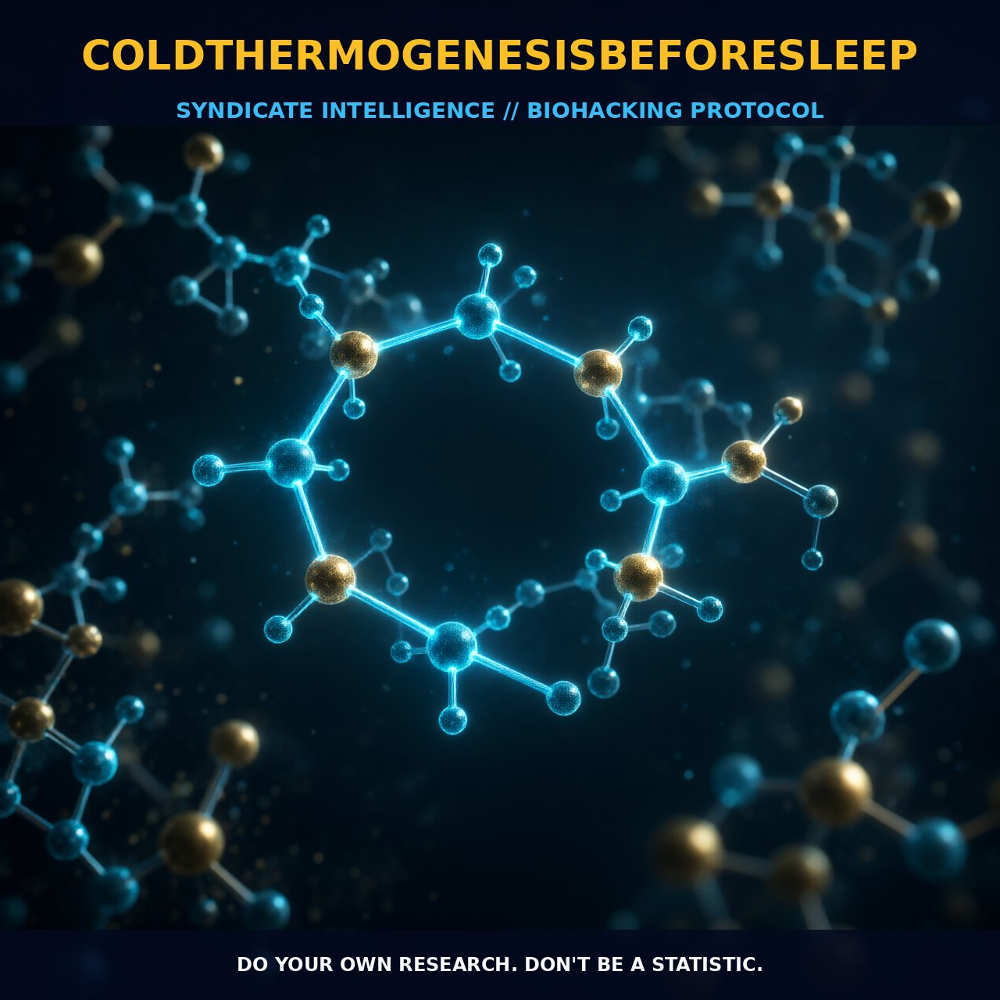

Optimizing Sleep Quality with Cold Thermogenesis

The Mechanism
Cold thermogenesis before sleep involves exposing the body to cold temperatures to activate metabolic processes and enhance physiological functions. The primary mechanism hinges on the activation of brown adipose tissue (BAT), a specialized fat tissue that generates heat through the process of thermogenesis. This process is regulated by the hypothalamus, the part of the brain that controls body temperature and other vital functions. When the body is exposed to cold, the hypothalamus initiates a series of responses to maintain homeostasis. These responses include the constriction of blood vessels in the extremities to conserve core body heat and the activation of the sympathetic nervous system, which triggers the release of norepinephrine to stimulate thermogenesis.
The activation of BAT is a crucial component of cold thermogenesis, as it burns white adipose tissue to generate heat, thereby increasing metabolic rate and promoting weight loss. Additionally, the cold-induced shivering response further enhances the metabolic rate by engaging muscle activity to generate heat. The cold exposure also modulates immune function, reducing systemic inflammation and neuroinflammation, both of which are linked to age-related diseases. The release of norepinephrine during cold exposure not only aids in thermogenesis but also contributes to improved mood, cognitive function, and stress resilience. The activation of the sympathetic nervous system and the subsequent release of norepinephrine play a key role in enhancing these benefits.
The Biological Leverage
Cold thermogenesis before sleep provides several biological advantages that can optimize various physiological systems. One of the primary benefits is the enhancement of metabolic processes. The activation of brown adipose tissue (BAT) and the associated increase in metabolic rate lead to improved thermogenesis and energy utilization. This enhanced metabolic activity can contribute to weight management and overall metabolic health. Cold thermogenesis also promotes the activation of brown fat, which can lead to the increased use of glucose in cellular energy metabolism, further enhancing metabolic efficiency.
Moreover, the cold-induced activation of the sympathetic nervous system and the subsequent release of norepinephrine contribute to a cascade of beneficial effects. Norepinephrine not only aids in thermogenesis but also plays a critical role in improving cognitive function and mood. By enhancing blood flow and increasing oxygen and nutrient delivery to the brain, norepinephrine supports better cognitive performance and emotional well-being. Additionally, the reduction in systemic inflammation and neuroinflammation through cold exposure can support a healthier immune system, potentially reducing the risk of chronic inflammatory diseases.
Cold thermogenesis also modulates the autonomic nervous system, which can lead to a state of increased alertness and resilience to stress. The release of cortisol during cold exposure can enhance stress resilience and support a more balanced autonomic response. Furthermore, the activation of BAT and the associated metabolic enhancements can promote better sleep quality by regulating body temperature, a key factor in achieving restful sleep. The improved immune function and reduced inflammation contribute to overall better health, potentially reducing the risk of age-related diseases.
Tactical Implementation
To effectively implement cold thermogenesis before sleep, it is essential to adopt a gradual approach. Begin by exposing yourself to mild cold temperatures, such as taking a cold shower, and gradually increase the intensity over time. The ideal duration for cold exposure is typically up to 20 minutes, or until the surface temperature of the body reaches around 10°C (50°F). It is crucial to take precautions to protect yourself from frostbite, particularly by covering your head, fingers, and toes.
Timing is another critical factor. Cold thermogenesis performed immediately before sleep can help regulate body temperature, promoting a deeper and more restful sleep. However, it is advisable to wait at least two hours after an intensive strength training workout before engaging in prolonged cold exposure, as immediate post-workout cold exposure can prevent the beneficial hormetic stress of strength training on muscle growth and blood vessel development.
To enhance the effectiveness of cold thermogenesis, consider incorporating adaptogens such as rhodiola rosea, ginseng, cordyceps, or ashwagandha, which can increase tolerance to cold-induced stress. Additionally, consuming thermogenic plants like green tea, coffee, ginger, or chili before cold exposure can promote heat generation and enhance the body's ability to withstand the cold. The use of an ice vest, cold showers, or cold pools can provide localized cold exposure, which is particularly effective for activating BAT.
For those new to cold thermogenesis, it is helpful to practice gradual acclimatization and to focus on breathing techniques such as hyperventilation and breath-holding, which can increase the body's tolerance to cold. This can be combined with swimming exercises in cool water, which further enhances the body's ability to withstand cold temperatures. By gradually building up tolerance and adopting these practices, individuals can effectively integrate cold thermogenesis into their daily routine to optimize metabolic, cognitive, and immune functions.
Prostar Life Hack
Start with a cold shower before bed, gradually increasing the duration to 20 minutes. Use adaptogens and thermogenic plants to enhance your tolerance and effectiveness. Focus on gradual acclimatization and breathing techniques to improve your body's ability to withstand the cold.
[ AUTHOR: LEAD TECHNICAL RESEARCHER ]